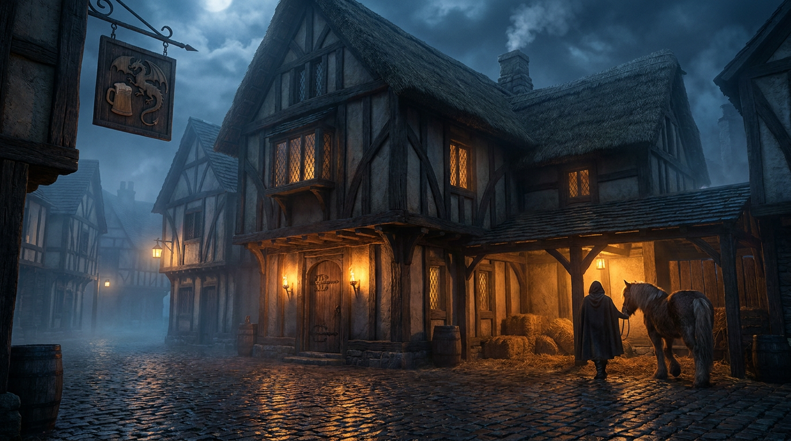

DIE CHRONIKEN DER ZAUBERREISE
Die Verzauberte Schenke
Von der Gemeinschaft mit Silbermünzen errichtet und über viele Streams hinweg erweitert.

Von der Gemeinschaft mit Silbermünzen errichtet und über viele Streams hinweg erweitert.